¡Bienvenido a la sección de actualidad de PokéNexo! Descubre las novedades más relevantes del universo Pokémon.
Noticias y Novedades
La Décima Generación: Pokémon Viento y Pokémon Oleaje

El 27 de febrero de 2026, durante el Pokémon Presents emitido por el 30º aniversario de la franquicia, nos dieron a conocer gran variedad de novedades, donde la más
importante fue, sin duda alguna, el anuncio de Pokémon Viento y Pokémon Oleaje.
Durante este tráiler, pudimos apreciar la nueva región, de la cual aún desconocemos su nombre oficial. Dicha región parece estar basada en un conjunto de
islas que recuerdan a los países del Sudeste Asiático, como Filipinas, Indonesia y Malasia. Además, conocimos a los nuevos protagonistas, a una pareja de
Pikachu con una indumentaria veraniega, llamados Sr. Ventachu y Sra. Oleachu, exclusivos de Pokemon Viento y Pokémon Oleaje respectivamente, y a los tres iniciales:
- Browt

- Pombon
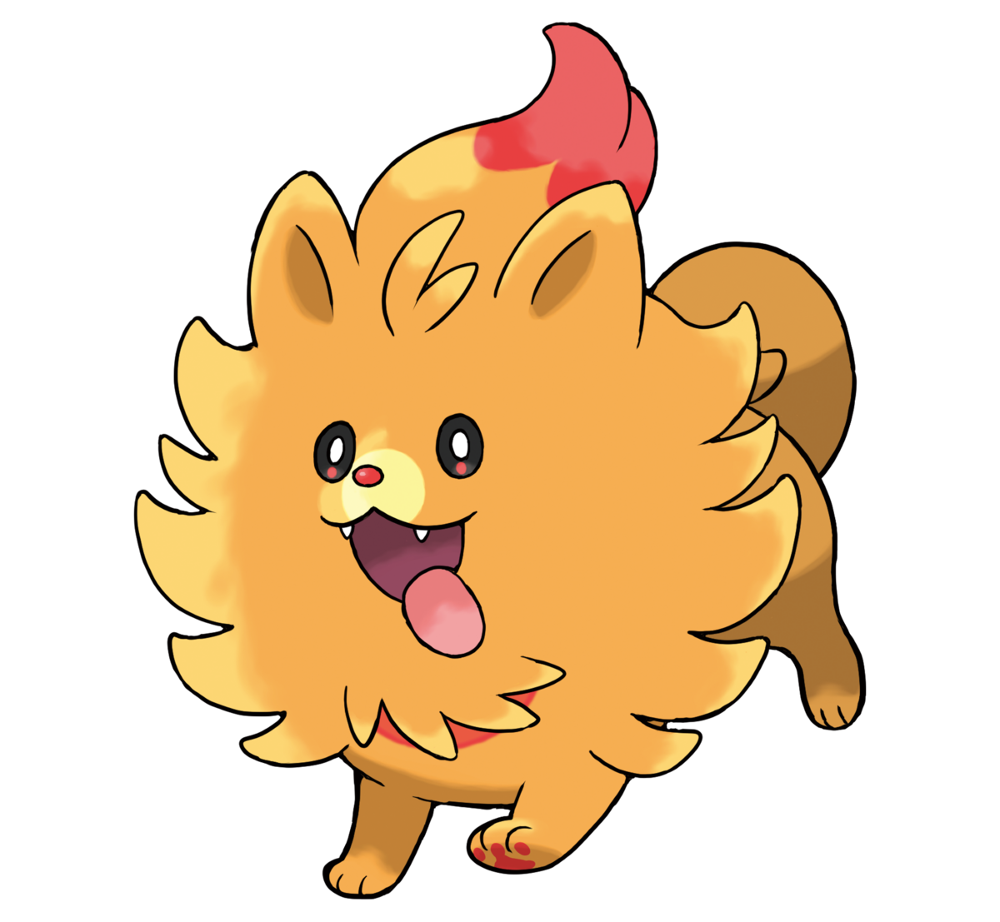
- Gecqua
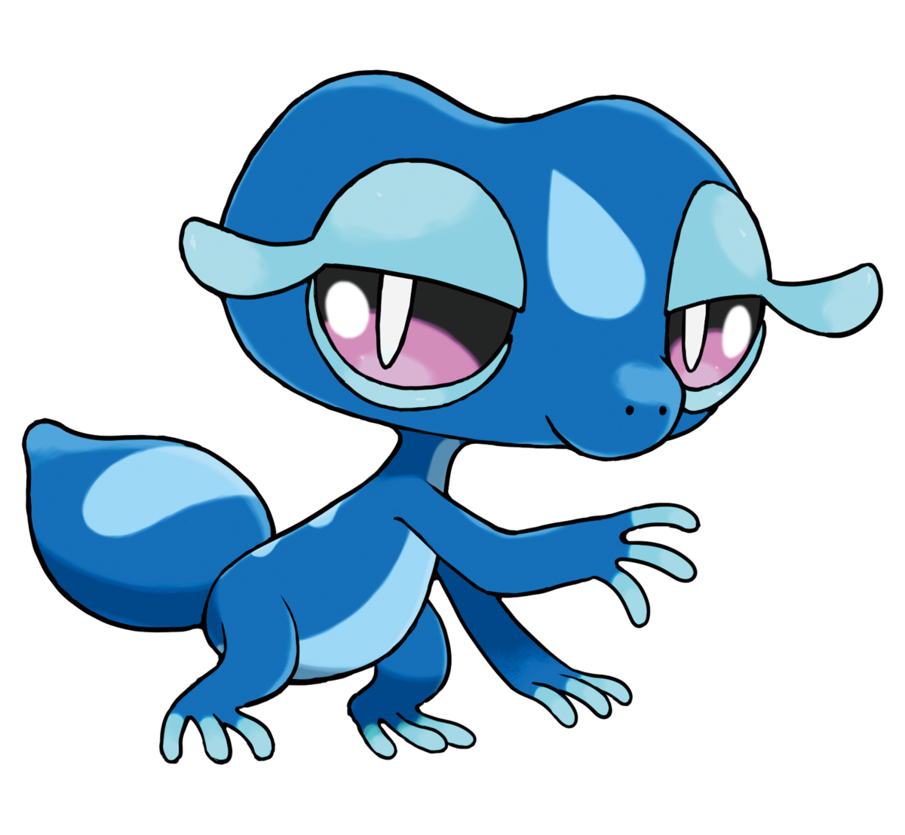
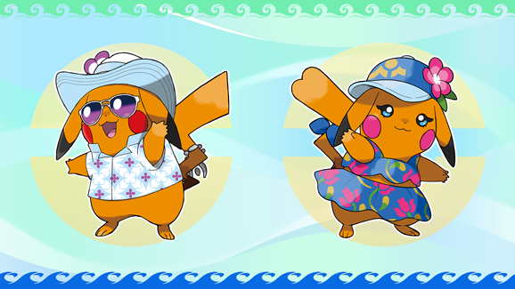
Dicha nueva generación parece mezclar el sistema de islas tan carismático de Alola, con la libertad de exploración que ofrecían Pokémon Escarlata y Pokémon Púrpura.
Nintendo planea lanzar estos juegos para 2027, exclusivamente para Nintendo Switch 2. Desde PokéNexo estimamos que, en caso de que no haya ningún retraso
inesperado, Pokémon Viento y Oleaje se lanzarán en el último trimestre de 2027.
Cabe destacar que, cuando estos juegos salgan al mercado, estarán disponibles en nuestra tienda.
Tráiler Oficial de Presentación: Pokémon Viento y Pokémon Oleaje
Xerneas e Yveltal Variocolor llegan a Leyendas Pokémon: Z-A
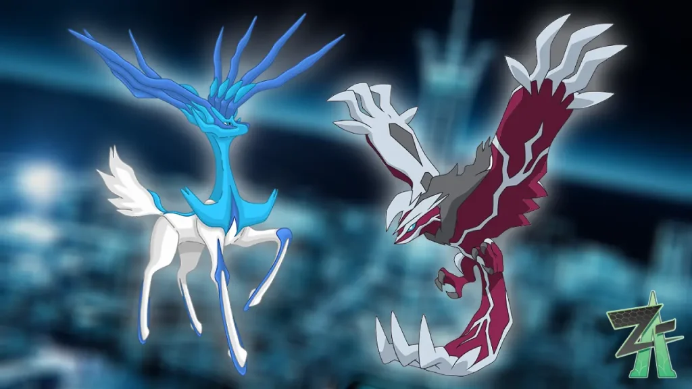
¡Los emblemas de Kalos llegan a Ciudad Luminalia en su versión variocolor! The Pokémon Company ha anunciado una distribución oficial de Xerneas e Yveltal para
celebrar el 30º aniversario de Pokémon.
El primero en llegar es Xerneas variocolor, que ya puede conseguirse gratuitamente mediante la función Regalo Misterioso de Leyendas Pokémon: Z-A.
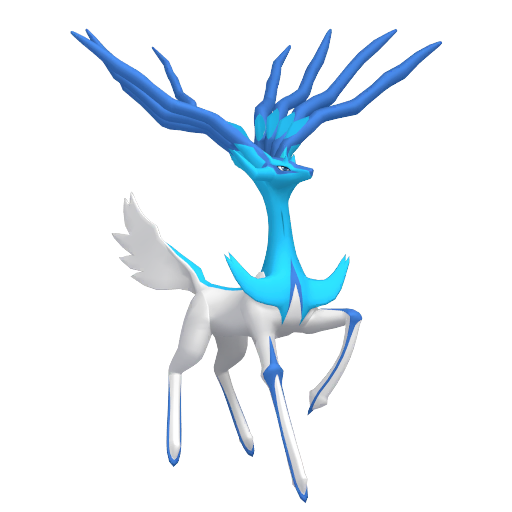
¿Cómo conseguir a Xerneas variocolor?
Para conseguir a este Pokémon legendario en su versión "shiny", tendrás que seguir los siguientes pasos:
- Abre el menú principal del juego.
- Selecciona Juego en conexión.
- Accede a Regalo misterioso.
- Selecciona Recibir mediante código o contraseña.
- Introduce el código CELEBRATE30TH.
- Guarda la partida después de recibirlo.
Podrás conseguir a Xerneas variocolor desde el 12 de noviembre de 2026 hasta el 7 de enero de 2027. ¡No dejes pasar esta oportunidad!
¡Yveltal variocolor también llegará próximamente!
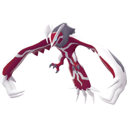
¡Pero las sorpresas no terminan aquí! También se ha confirmado la distribución de Yveltal variocolor, que comenzará el 10 de diciembre de 2026 y finalizará
el 4 de febrero de 2027.
Por el momento, se desconoce la contraseña necesaria para conseguir a Yveltal. Se anunciará oficialmente cuando comience su distribución. ¡Permanece atento
a las próximas novedades!
¡Megaevolución-Dominio Delta llega al JCC Pokémon!
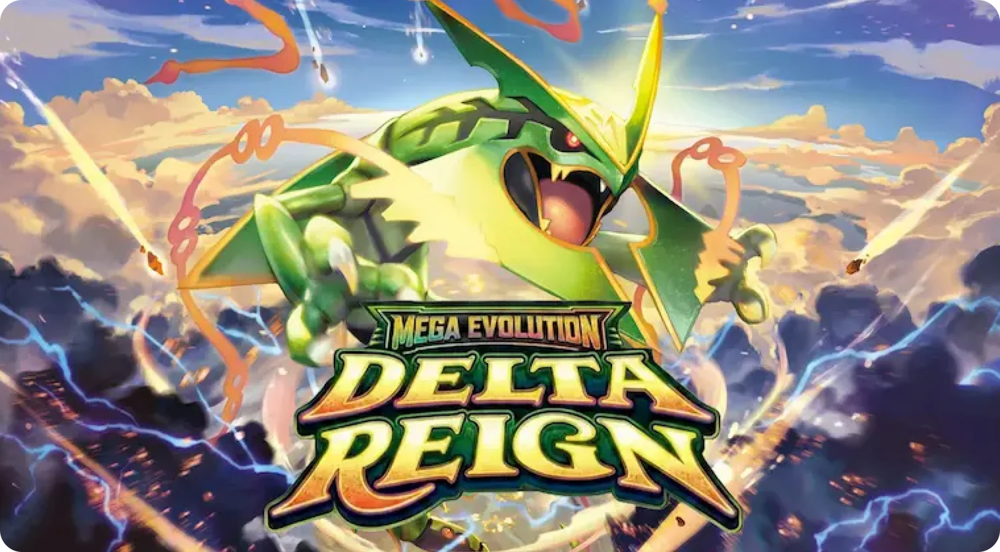
¡Mega-Rayquaza regresa por todo lo alto al Juego de Cartas Coleccionables Pokémon! El 6 de noviembre de 2026 se lanzó Megaevolución-Dominio Delta, una nueva
expansión de la serie Megaevolución que incorpora más de 135 cartas.
Esta nueva colección trae de vuelta a poderosos Pokémon Megaevolución, nuevas ilustraciones y una mecánica que promete cambiar las estrategias de combate.
¡Una expansión que los coleccionistas no querrán perderse!
¡Mega-Rayquaza ex y nuevas Megaevoluciones!
Mega-Rayquaza ex es uno de los grandes protagonistas de Dominio Delta, acompañado de otros Pokémon ex Megaevolución que llegan para ampliar las posibilidades
de los jugadores.
Entre los Pokémon más destacados de esta expansión encontramos:
- Mega-Rayquaza ex
- Mega-Golurk ex
- Mega-Malamar ex
- Mega-Golisopod ex
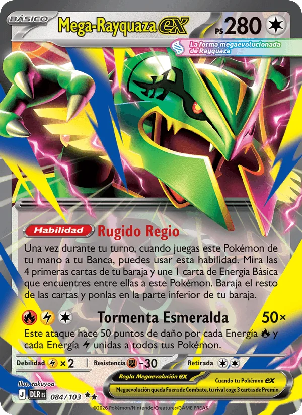
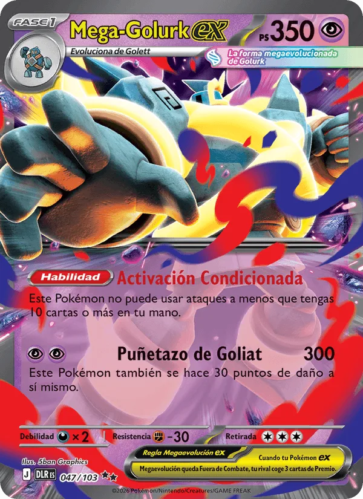
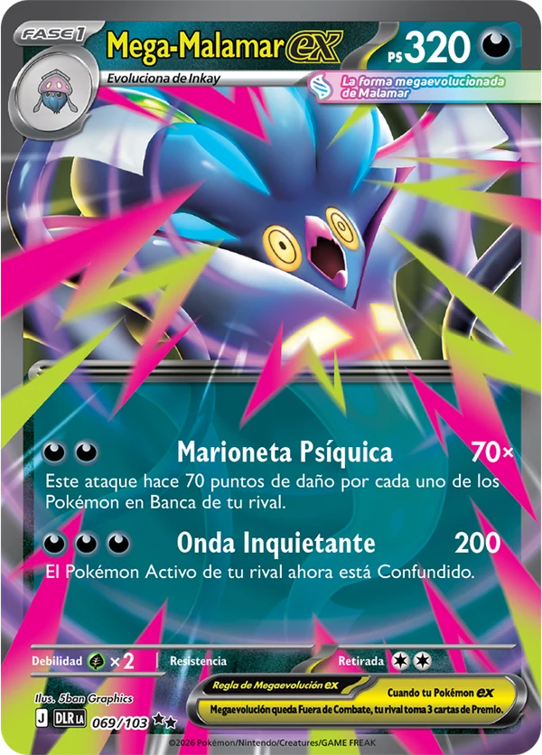
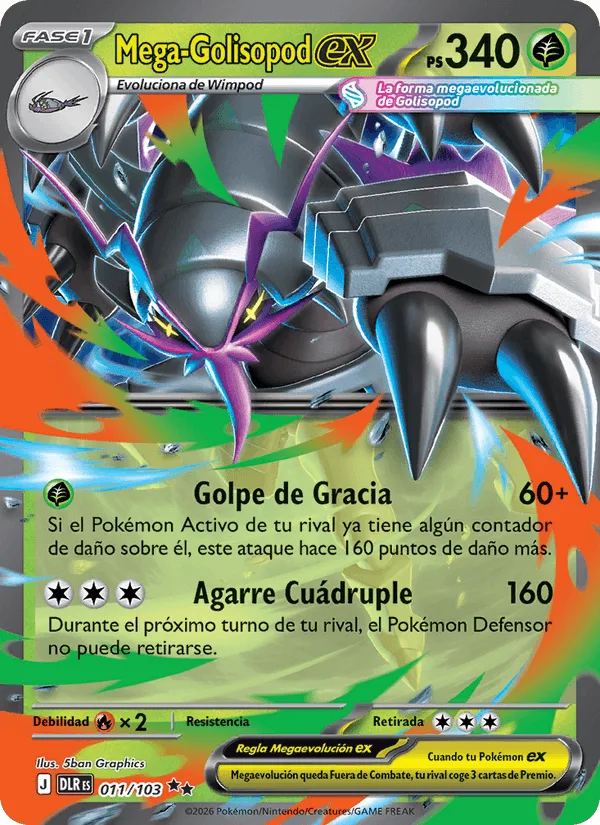
Una nueva mecánica: los Estadios Legendarios
¡Las novedades no terminan con las Megaevoluciones! Dominio Delta introduce los Estadios Legendarios, una nueva mecánica que permite combinar dos cartas de
Estadio para formar una única carta especial.
Estas cartas destacan por sus ilustraciones conectadas y sus efectos estratégicos. Además, los sobres que incluyen un Estadio Legendario contienen las dos
mitades necesarias para utilizarlo.